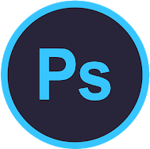
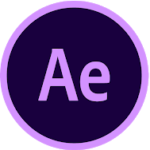
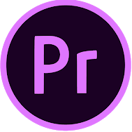
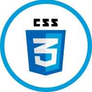
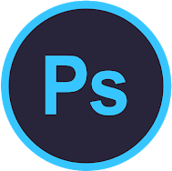
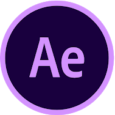
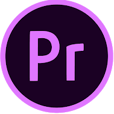
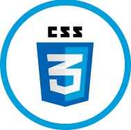

SOBRE MI
 







JUAN CRUZ
CARREÑO MENDOZA
Soy un estudiante de Artes Visuales y Productor Audio Visual. Actualmente enfocado en el Diseño Web, Diseño UX UI, Publicidad, Marketing y Arte Audio Visuales. Mi Objetivo laboral es desempeñarme como Diseñador Grafico / UX UI, ademas con aspiraciones a ser un futuro front end developer.
ESTUDIOS
2012 2021 UNIVERIDAD NACIONAL DE SAN JUAN FACULTAD DE FILOSOFIA HUMANIDAES Y ARTES Universitario Licenciatura y Profesorado en Artes Visuales 2020 2021 CODERHOUSE - DISEÑO UX /UI - DISEÑO UX /UI AVANZADO 2006 2007 ISRI Carreras y Programas Internacionales Terciario tecnicatura en Arte Digital I Diseño Grafico, Illustrator, Photoshop, Coreldraw Diseño de Páginas Web
EXPERIENCIA
2021 - Tutor Coderhouse Tutor en el instituto CoderHouse en curso Ilustrator & Photoshop
- 2021 - Foster Viajes - Freelance Creacion de piezas graficas Publicidad para redes sociales
- 2021 - Lo Artesanal - Pastas de Autor - Freelance Creacion de branding y piezas graficas Publicidad para redes sociales Social Media
- 2021 - Rico Paladar - Lomoteca - Freelance Creacion de branding y piezas graficas Publicidad para redes sociales Social Media
- 2020 - Wecall Operador telefónico Vendedor telefónico de Wecall-Peru Trabajo remoto
- 2019 - 2018 UNSJ F.F.H.A. Departamento de Artes Visuales
- TUTOR AYUDANTE ADSCRIPTO Alumno Adscripto en la carrera OPTATIVA I Y OPTATIVA II: Taller de Cerámica, de la carrera de Artes Visuales. Taller Generación de Formas Orgánicas. Concurriendo como colaborador del taller organizado por las Sociedad de Arquitectos de San Juan y el Instituto de teoría, Historia y Critica de la FAUD